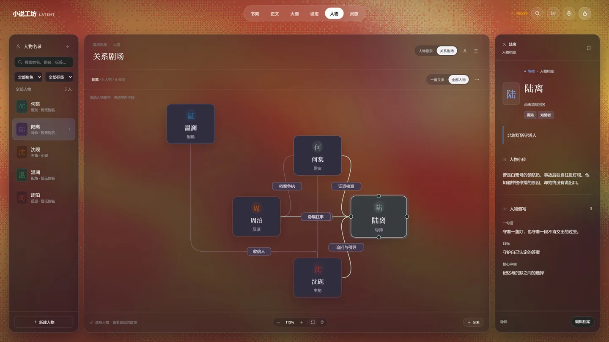
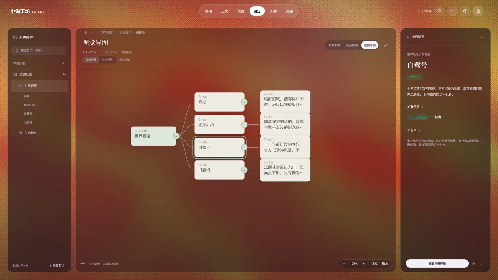
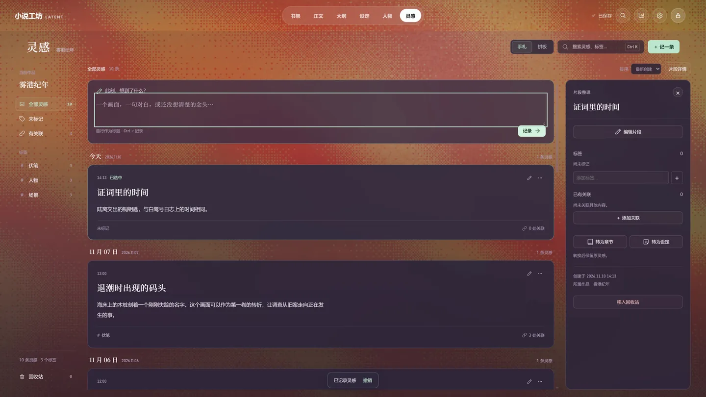
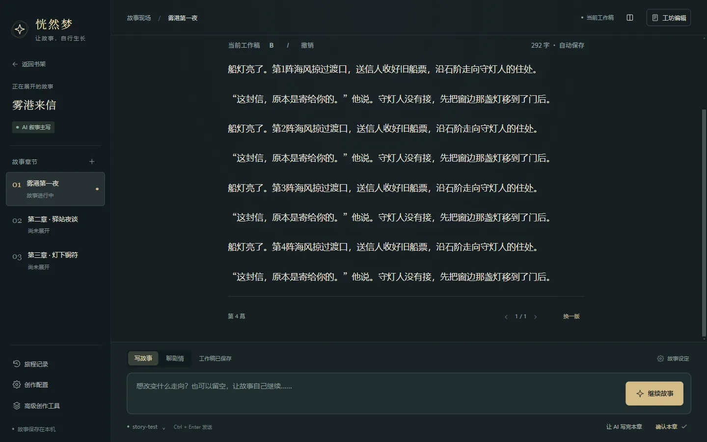
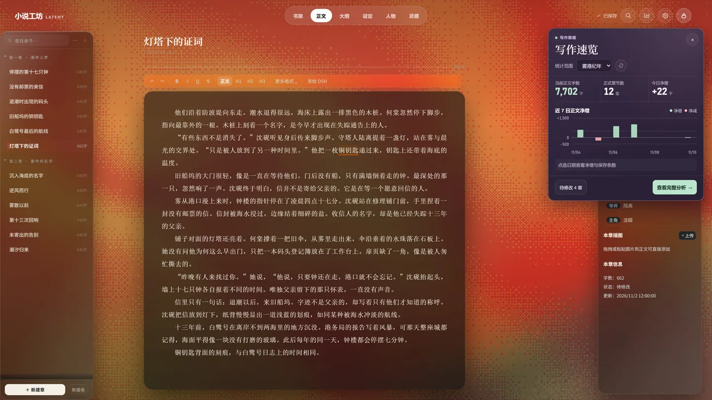
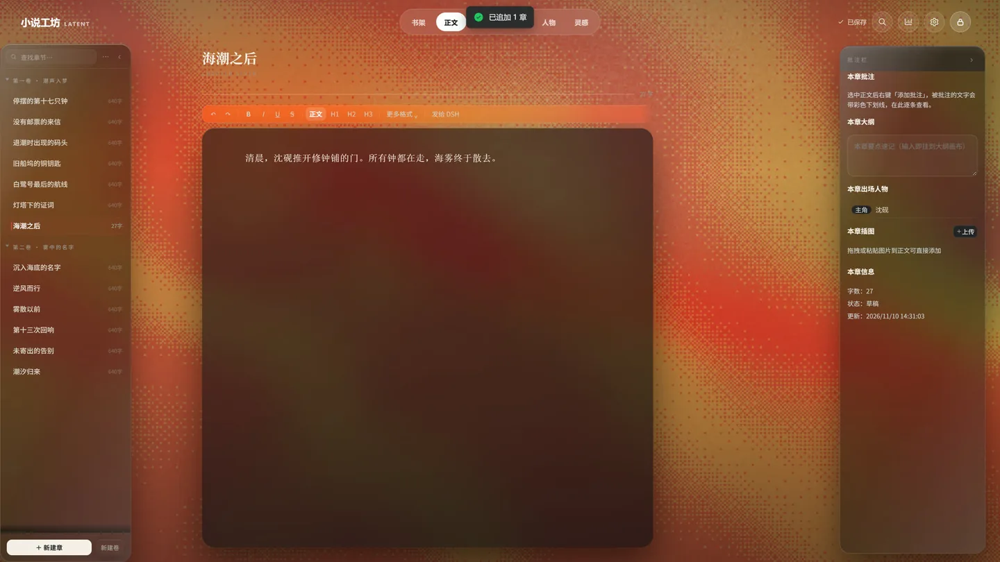
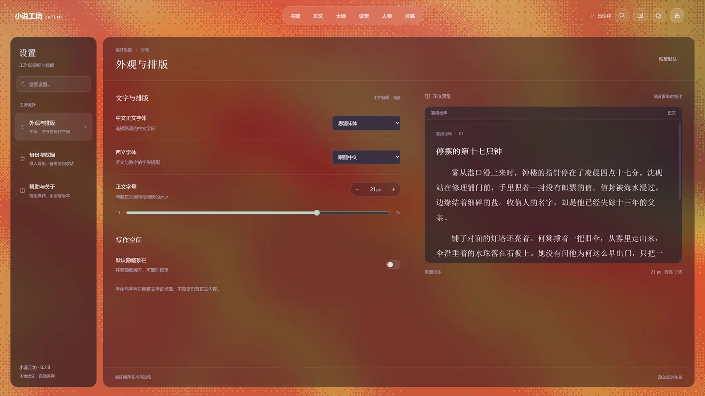

快速开始
从书架进入同一部作品的正文、大纲、人物、设定和灵感。
安装桌面版
从 GitHub Releases 下载安装程序并打开小说工坊。安装后的首屏是书架。
建立第一部作品
在书架点右下角「＋」，填写书名和题材。选中新书，点「继续写作」进入正文，或点「打开工作台」查看项目。
切换模块
用顶栏的书架、正文、大纲、设定、人物和灵感切换工作区。齿轮打开设置。
书架与作品
管理多部作品，接续上次写作的位置。
新建或修改作品
在书架点「＋」建书。选中书封后，用更多菜单编辑作品信息或删除。误删可去回收站检查。
筛选与搜索
点书架上方的状态计数按创作状态筛选。用搜索定位书名或作者，选中结果后进入作品。
接续写作
选中一本书查看作者、章节和字数，点「继续写作」回到记住的写作位置。

正文与卷章
从卷章目录进入编辑，写作、回看和校稿都围绕同一个稿面。
新建和整理卷章
在正文左侧目录新建卷或章节。通过目录入口重命名、拖动排序或移卷，点击章节即可编辑。
编辑与自动保存
稿面输入文字，通过工具栏或「更多」设置标题、强调、列表、引用和对齐。观察顶栏保存状态，确认改动已写入。
批注与书签
选中文字，右键选「添加批注」，填写意见并选用途色。点右栏批注返回原文。需要常查的章节可用书签收藏。
查看历史与阅读
在正文的历史入口打开旧版本，核对内容后选择恢复。用阅读模式以只读排版查看稿件，退出后回到编辑。
布置写作空间
按需收起左侧目录和右侧札记，拖动分隔线调整栏宽。当前开发预览会保存写作布局；阅读和专注时可通过界面按钮退出该模式。

文本大纲与分层画布
用幕布列出故事结构，用画布组织事件、分层和关系。
切换和编辑文本大纲
打开「大纲」，从工作区的视图入口切到文本。用缩进、行内编辑和拖拽整理节点，也可从 Markdown 或 TXT 导入层级。
添加卡片与连线
在画布工具条选事件、便签、引用、文本框、锚点、卷或容器。拖动卡片摆放，再从锚点拖到目标卡片。右键连线编辑语义、标签、线型或连接点。
整理故事层级
把相关卡片拖进容器，按需展开、拖动重排或点「进入容器」下钻。通过面包屑返回，在结构树里点击目标回到相应位置。
审视结构
用总览、适应和缩放检查全局。为事件标记状态，多选归组；选择画布设置调整点阵、连线、箭头或吸附。

人物卷宗与关系图
在角色名册中找人，在关系图中查看人物之间的联系。
建立人物卷宗
进入「人物」，新建角色，填写角色定位、标签、小传和自定义字段。按定位或标签筛选以缩小名单。
画出人物关系
切到关系图，从一个人物的锚点拖线到另一个人物，填写关系标签。点线调整样式，悬停看邻近关系。需要写进情节时，可将人物发送为大纲引用卡。

设定树与关系星系
把世界观拆成可查询的条目，沿关系观察人、地点与规则。
整理设定树
进入「设定」，在幕布中新建、缩进或拖动条目。双击条目看详情、子条目和关联项。
建立条目级关联
右键条目选择「设置关系」，搜索人物或设定，选关系类型并填写描述。从行尾关系卡片进入管理。
查看关系星系
在隐现的设定模块打开关系星系。点选星体查看关系摘要，拖动布局并用缩放和适应查看关联。当前开发预览包含轨道拖拽、并轨与星体运动设置。

关系链接与独立窗口
把稿件和资料连起来，写作时随手查证。
添加文内关系链接
从正文、幕布、人物小传或灵感中选中文字，右键「添加关系链接」，选目标。支持的编辑区也可输入 [[条目标题]]。
预览与跳转
悬停链接查看预览，拖动标题栏可钉住。使用跳转入口打开目标；在支持双击链定位的版本中可双击跳转，目标已拆窗时会定位到相应窗口。
拆开工作区
在桌面支持拆窗的模块使用「独立窗口」。例如保留正文主窗、在另一窗口查看大纲。同一条目被独立窗口占用时，其他窗口提示前往占用窗口。
动手试试：让设定进入正文 →灵感手记
先收下素材，成形后再归档到结构里。
记录和查找
进入「灵感」，新建手记并填写内容。通过列表和搜索找回已经记录的片段。
发展为结构
用灵感条目的转换入口，将成熟片段加入设定或大纲，在目标模块继续整理。

恍然梦与知识检索
作者控制稿件取舍，AI 在配置好模型后参与创作。
配置模型
桌面端进入「设置 → 模型设置」，配置供应商预设、连接地址、密钥和模型，完成连接测试。按需在「知识库模型」启用语义检索并设置向量模型。
浅眠辅助写作
在工坊进入「恍然梦－浅眠」，结合当前章节提出建议、请求续写或改写。读完候选稿后手动选择应用。
入梦共同创作
从书架或作品的恍然梦入口进入「入梦」，选择作品或从空白开始。可继续写、一起推演，或切回工坊手动编辑。
审阅并确认
对照原文与候选稿，检查人物、设定和伏笔。在线模型的请求会按配置发送到模型服务。网页演示使用预置候选，适合先了解操作。
在高级创作工具中处理多章
在入梦里打开「高级创作工具」，按章节安排构思、起稿和审修。批量生成的方案逐项查看，确认稿件后再回到正文核对。

全局搜索与写作统计
在多模块之间定位内容，了解作品进度。
查找作品内容
用顶栏搜索入口打开搜索面板，输入章节、人物、设定或灵感关键词，点结果回到对应模块和条目。
查看进展
从顶栏统计入口打开写作统计，按项目和时间查看字数、章节结构、写作轨迹与修订。结合日期区间阅读数据。

导入、交稿与备份
导入已有稿件，按章节输出，再为整个工作区保存快照。
导入作品
打开「设置 → 备份与数据 → 导入文本作品」，选择 TXT、Markdown、Word、PDF 或 EPUB，确认预览和分章后导入。导入图片时先打开要接收素材的作品。
导出正文
在同一页面选择「导出正文」，选择作品、卷章和 TXT、Markdown 或 Word。大批量导出按界面提示选择合并或按章打包。
备份与恢复
选「备份全部数据」生成 JSON。恢复前先保留当前备份，检查即将替换的工作区及备份内容，再确认恢复。
回收站与存储位置
从「备份与数据」进入回收站，选择误删项恢复。桌面端的存放路径可在「作品数据存储位置」查看和调整。

皮肤、排版与流动背景
按写作环境调整外观、字体和动画。
选择界面皮肤
桌面端打开「设置 → 外观与排版 → 界面皮肤」。当前选择器提供隐现、原版工坊和赤月戏。原版工坊内可换主题。
调整正文排版
在外观与排版分别设置中文字体、西文字体和正文字号，并在预览中检查。
调整流动背景
在隐现的「外观与排版 → 流动背景」选择跟随作品封面或自定义两色。开发预览的速度滑杆支持 0–2×，0× 为静止。

版本和适用端
先确认你正在使用哪个版本和宿主。
Windows 桌面
本站以开发工作区 1.2.3 的可验证功能为基准。关系星系的轨道编辑、隐现背景速度和进一步的层次调整属于开发预览。正式安装包和发布内容以 GitHub Releases 为准。
网页版
网页版使用浏览器自己的本地存储，桌面工作区的数据需要通过备份或导入导出迁移。系统窗口、安装升级与原生文件操作属于桌面环境。
DSH 插件
插件在 DSH 宿主中运行并使用宿主存储与主题。桌面版的恍然梦和原生窗口入口按桌面说明使用，插件的助手与可用菜单以宿主为准。